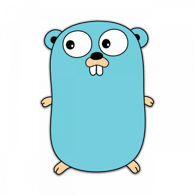

Computer Vision
Using Go and OpenCV 3
gobot.io

gocv.io
opencv.org

Intel Computer Vision SDK
Why you should use Go for
computer vision
Concurrency
Performance
Portability
What you can do with computer vision
Detect motion
Recognize people
Telepresence
Autonomous Vehicles
Augmented Humans
The "Hello, world" of video
package main
import (
"gocv.io/x/gocv"
)
func main() {
webcam, _ := gocv.VideoCaptureDevice(0)
window := gocv.NewWindow("Hello")
img := gocv.NewMat()
for {
webcam.Read(img)
window.IMShow(img)
gocv.WaitKey(1)
}
}
Demo
Tracking faces
package main
import (
"fmt"
"image/color"
"gocv.io/x/gocv"
)
func main() {
deviceID := 0
// open webcam
webcam, err := gocv.VideoCaptureDevice(int(deviceID))
if err != nil {
fmt.Printf("error opening video capture device: %v\n", deviceID)
return
}
defer webcam.Close()
// open display window
window := gocv.NewWindow("Face Detect")
defer window.Close()
// prepare image matrix
img := gocv.NewMat()
defer img.Close()
// color for the rect when faces detected
blue := color.RGBA{0, 0, 255, 0}
// load classifier to recognize faces
classifier := gocv.NewCascadeClassifier()
defer classifier.Close()
classifier.Load("data/haarcascade_frontalface_default.xml")
fmt.Printf("start reading camera device: %v\n", deviceID)
for {
if ok := webcam.Read(img); !ok {
fmt.Printf("cannot read device %d\n", deviceID)
return
}
if img.Empty() {
continue
}
// detect faces
rects := classifier.DetectMultiScale(img)
fmt.Printf("found %d faces\n", len(rects))
// draw a rectangle around each face on the original image
for _, r := range rects {
gocv.Rectangle(img, r, blue, 3)
}
// show the image in the window, and wait 1 millisecond
window.IMShow(img)
gocv.WaitKey(1)
}
}